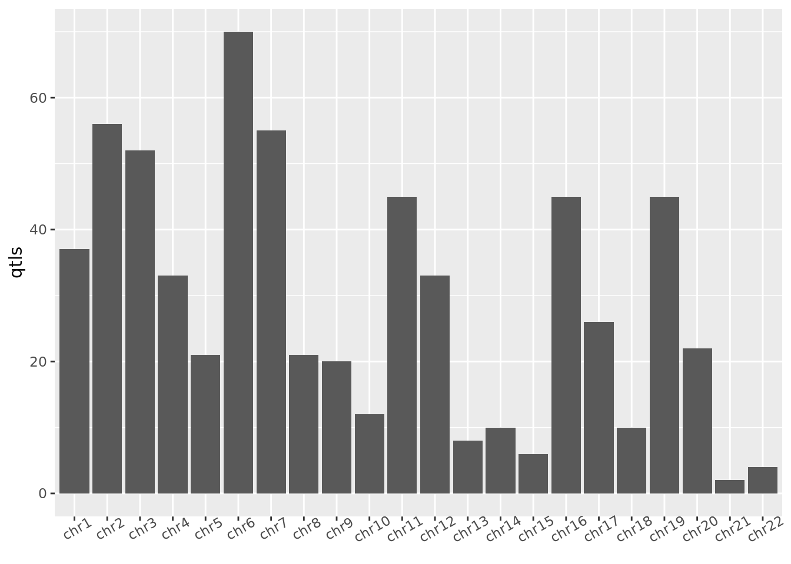

Code
metadata = fread("../code/resources/geuvadis-sample-run-pop-lookup.tsv")Chao Dai
December 12, 2022
I used 364 EUR Geuvadis samples that have a match in 1000 genome project. These are originally from Ankeeta’s junction files. I noticed all of these samples only have 1 single ERR file, even though there should be many individuals correspond to more than 1 ERR files.
I run EUR and YRI separately.
perm_out_cols = c("pid", "pchr", "pstart", "pend", "pstrand", "num_snp_tested",
"best_nominal_dist", "best_gid", "best_gchr", "best_gstart",
"best_gend", "true_dof", "esti_dof", "beta_ml1", "beta_ml2",
"pval_nom", "pval_r2", "regression_slop", "pval_emp",
"pval_adj", "q")
folder = paste0("../code/results/qtl/noisy/Geuvadis/", params$population, "/cis_100000/perm", collapse = "")
qtls = dir(folder, ".+addQval.txt.gz", full.names = T)
qtls = naturalsort::naturalsort(qtls)
names(qtls) = str_extract(qtls, "chr[0-9]{1,2}")
qtls = map(qtls, ~fread(.x, col.names = perm_out_cols))qvalue summaries
$chr1
Min. 1st Qu. Median Mean 3rd Qu. Max.
0.0000 0.8339 0.8599 0.7917 0.8599 0.8802
$chr2
Min. 1st Qu. Median Mean 3rd Qu. Max.
0.0000 0.6384 0.7473 0.6505 0.7654 0.7852
$chr3
Min. 1st Qu. Median Mean 3rd Qu. Max.
0.0000 0.6871 0.8038 0.6949 0.8433 0.8697
$chr4
Min. 1st Qu. Median Mean 3rd Qu. Max.
0.0000 0.7405 0.8139 0.7454 0.8587 0.8737
$chr5
Min. 1st Qu. Median Mean 3rd Qu. Max.
0.0000 0.7004 0.7439 0.6851 0.7442 0.7783 $chr6
Min. 1st Qu. Median Mean 3rd Qu. Max.
0.0000 0.5139 0.6686 0.5886 0.7445 0.7834
$chr7
Min. 1st Qu. Median Mean 3rd Qu. Max.
0.0000 0.6038 0.7352 0.6388 0.7697 0.8101
$chr8
Min. 1st Qu. Median Mean 3rd Qu. Max.
0.0000 0.8053 0.8753 0.8160 0.9527 0.9646
$chr9
Min. 1st Qu. Median Mean 3rd Qu. Max.
0.0000 0.7470 0.7884 0.7149 0.8191 0.8413
$chr10
Min. 1st Qu. Median Mean 3rd Qu. Max.
0.0000 0.9879 0.9879 0.9386 0.9879 0.9982 $chr11
Min. 1st Qu. Median Mean 3rd Qu. Max.
0.0000 0.5516 0.7024 0.6178 0.7417 0.7768
$chr12
Min. 1st Qu. Median Mean 3rd Qu. Max.
0.0000 0.6674 0.8433 0.7345 0.8433 0.8618
$chr13
Min. 1st Qu. Median Mean 3rd Qu. Max.
0.0002205 0.8703600 0.8961700 0.8314355 0.8961700 0.9097100
$chr14
Min. 1st Qu. Median Mean 3rd Qu. Max.
0.001165 0.954370 0.954370 0.908500 0.954370 0.972210
$chr15
Min. 1st Qu. Median Mean 3rd Qu. Max.
0.0002337 0.8384000 0.8499500 0.8088334 0.8516200 0.8695200 $chr16
Min. 1st Qu. Median Mean 3rd Qu. Max.
0.0000 0.6896 0.8510 0.7374 0.8856 0.9059
$chr17
Min. 1st Qu. Median Mean 3rd Qu. Max.
0.0000 0.9878 0.9878 0.9316 0.9878 0.9995
$chr18
Min. 1st Qu. Median Mean 3rd Qu. Max.
0.0000502 0.7877600 0.7987300 0.7301585 0.7987300 0.8216700
$chr19
Min. 1st Qu. Median Mean 3rd Qu. Max.
0.0000 0.6901 0.7812 0.6810 0.7893 0.8209
$chr20
Min. 1st Qu. Median Mean 3rd Qu. Max.
0.0000 0.8439 0.8829 0.8091 0.9242 0.9411
$chr21
Min. 1st Qu. Median Mean 3rd Qu. Max.
0.07043 0.79009 0.79948 0.72310 0.80723 0.83222
$chr22
Min. 1st Qu. Median Mean 3rd Qu. Max.
0.001986 0.827950 0.827950 0.795585 0.827950 0.851300 These p-values are adjusted for number of variants, but not adjusted for phenotypes.
Total number of qtls: 633

# load in annotation
anno.gene = "../../genome_index/hs38/gencode.v38.primary_assembly.annotation.dataframe.csv"
mycols = c("seqname", "start", "end", "strand", "gene_name")
anno.gene = fread(anno.gene)
anno.gene = anno.gene[gene_type %in% c("protein_coding") &
feature %in% c("gene") &
source %in% c("HAVANA"), ..mycols] %>%
unique %>%
makeGRangesFromDataFrame(keep.extra.columns = T)
# remove scaffolds
chroms = paste("chr", 1:22, sep = "")
anno.gene = anno.gene[seqnames(anno.gene) %in% chroms]# annotate pid with gene names
puta_loci = puta_qtls[, .(pid, pchr, pstart, pend, pstrand)] %>%
makeGRangesFromDataFrame(keep.extra.columns = T,
seqnames.field = "pchr",
start.field = "pstart",
end.field = "pend",
strand.field = "pstrand")
hits = GenomicRanges::findOverlaps(puta_loci, anno.gene, minoverlap = 1)
hits = cbind(puta_loci[queryHits(hits)] %>% mcols,
anno.gene[subjectHits(hits)] %>% mcols
)
hits = as.data.table(hits) %>%
.[, list(genes = pull(.SD, gene_name) %>% paste0(collapse = ",")), by = "pid"]
puta_qtls = hits[puta_qtls, on = "pid", nomatch = NA] pid genes pchr pstart pend pstrand num_snp_tested best_nominal_dist best_gid best_gchr best_gstart best_gend true_dof esti_dof
1: chr16:1952272:1953151:clu_221327_-_* RPL3L chr16 1952273 1953151 - 570 -6986 16:1960137:G:A chr16 1960137 1960137 351 285.479
2: chr7:22819329:22828821:clu_504629_-_* TOMM7 chr7 22819330 22828821 - 559 13338 7:22805990:ATCTC:A chr7 22805988 22805992 351 276.841
3: chr11:34860939:34894351:clu_82599_-_* APIP chr11 34860940 34894351 - 869 0 11:34881391:CAAAAAAAAA:C chr11 34881388 34881401 351 304.691
4: chr3:40474486:40478434:clu_413787_+_* ZNF619,ZNF620 chr3 40474487 40478434 + 485 -2004 3:40472483:C:A chr3 40472483 40472483 351 306.679
5: chr17:19500479:19515626:clu_271314_+_* SLC47A1 chr17 19500480 19515626 + 395 75239 17:19590865:C:A chr17 19590865 19590865 351 331.188
---
275: chr17:40334035:40334414:clu_276539_+_* RARA chr17 40334036 40334414 + 134 53409 17:40387823:C:CT chr17 40387823 40387823 351 275.830
276: chr12:6212156:6212839:clu_155856_+_* CD9 chr12 6212157 6212839 + 473 -5997 12:6206159:CAA:C chr12 6206158 6206160 351 153.443
277: chr7:32986690:33011312:clu_520825_+_* FKBP9 chr7 32986691 33011312 + 402 -42590 7:32944104:C:CT chr7 32944101 32944101 351 218.929
278: chr19:53520679:53525370:clu_332793_+_* ZNF331 chr19 53520680 53525370 + 733 90273 19:53615643:T:C chr19 53615643 53615643 351 281.074
279: chr6:42284088:42289996:clu_479219_-_* TRERF1 chr6 42284089 42289996 - 507 58879 6:42225210:C:CT chr6 42225210 42225210 351 318.694
beta_ml1 beta_ml2 pval_nom pval_r2 regression_slop pval_emp pval_adj q
1: 1.026700 54.87810 4.12045e-98 0.7165330 -0.08958500 0.000999001 1.80644e-80 1.5083e-77
2: 1.062840 37.48500 3.21909e-90 0.6856450 0.00833091 0.000999001 2.54593e-74 1.8402e-71
3: 0.901605 24.15360 3.74268e-68 0.5802940 0.01802620 0.000999001 2.34106e-52 1.9660e-49
4: 1.005010 44.90580 7.67052e-59 0.5258860 -0.01132690 0.000999001 3.17106e-50 1.4693e-47
5: 1.018300 63.26400 1.47492e-48 0.4576120 -0.04426970 0.000999001 6.56553e-45 6.9660e-42
---
275: 0.476076 9.13316 5.41917e-09 0.0925316 0.19287100 0.015984000 2.22276e-03 9.0706e-02
276: 0.599822 9.58391 8.84420e-12 0.1244150 0.29984800 0.020979000 3.33263e-03 9.2092e-02
277: 1.000000 16.53600 8.53844e-06 0.0549603 0.12482900 0.065934100 7.27649e-03 9.5627e-02
278: 0.984625 92.47690 5.55702e-06 0.0571731 0.02320550 0.015984000 4.86269e-03 9.5879e-02
279: 1.083760 69.59220 8.40795e-05 0.0431612 -0.00765638 0.004995000 8.26468e-03 9.9921e-02